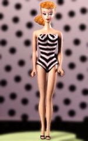
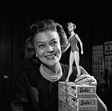

Barbie
História da Barbie

| Criadora |
Ruth Handler |
|---|
| País de origem |
EUA |
|---|
| Lançamento |
09/03/1959 |
|---|
| Fabricado e distribuido |
Mattel |
|---|
|  |
A Barbie é uma boneca fashion criada pela empresa americana Mattel, Inc., e é uma das bonecas mais populares e icônicas do mundo. Aqui está uma breve história da Barbie:
Criação e Lançamento
- Criada por Ruth Handler, cofundadora da Mattel, em 1959.
- Inspirada na filha de Ruth, Barbara, e na boneca alemã "Bild Lilli".
- Lançada na feira de brinquedos do Toy Fair, em Nova York, em 1959.
Primeira Barbie
- A primeira Barbie foi chamada de "Barbie Millicent Roberts".
- Tinha cabelos loiros, olhos azuis e uma silhueta curvilínea.
- Vestia um maiô preto e branco e sapatos de salto alto.
Evolução
- Nos anos 60, a Barbie passou a ter diferentes estilos de cabelo e roupas.
- Nos anos 70, foram introduzidas bonecas negras e hispânicas.
- Nos anos 80, a Barbie passou a ter profissões, como médica e astronauta.
- Nos anos 90, a Barbie passou a ter diferentes tamanhos e formas de corpo.
Impacto Cultural
- A Barbie se tornou um ícone da cultura popular.
- Inspirou várias gerações de crianças e adultos.
- Foi tema de várias exposições e museus.
Críticas e Controvérsias
- A Barbie foi criticada por promover padrões de beleza irreais.
- Foi acusada de perpetuar estereótipos de gênero.
- Foi alvo de várias campanhas de boicote.
Atualidade
- A Mattel continua a inovar e diversificar a linha de produtos da Barbie.
- A Barbie agora tem diferentes tamanhos, formas e cores de pele.
- A Mattel lançou a linha "Barbie Fashionistas", que celebra a diversidade e a inclusão.
A Barbie é um ícone cultural que continua a evoluir e se adaptar às mudanças sociais e culturais
A boneca mais queria do Mundo